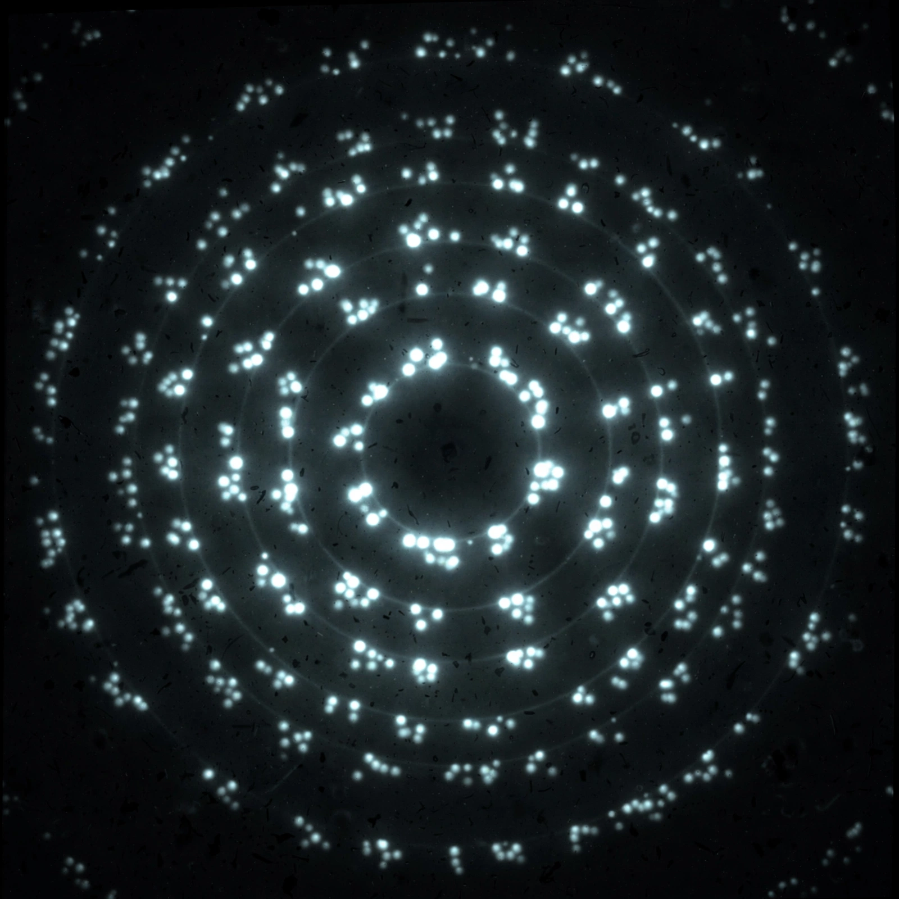

| X-ray diffraction | |
|---|---|
 Diffraction pattern from a crystalline sample | |
| Discovered | 1912 (Max von Laue) |
| Governing law | Bragg's law: nλ = 2d sin θ |
| Applications | Crystallography, materials science, structural biology |
X-ray diffraction is a phenomenon in which X-rays are scattered by the atoms of a crystal, producing an interference pattern of spots, rings, or arcs from which the atomic and molecular structure of the material can be determined. Because X-ray wavelengths (around 10−10 m) are comparable to interatomic spacings, crystals act as natural three-dimensional diffraction gratings for X-rays.
In 1912 Max von Laue and co-workers in Munich demonstrated that crystals diffract X-rays, simultaneously proving the wave nature of X-rays and the lattice structure of crystals. William Henry Bragg and his son William Lawrence Bragg developed the simpler crystal-reflection interpretation known as Bragg's law, nλ = 2d sin θ, relating the scattering angle θ to the spacing d of lattice planes. Father and son shared the 1915 Nobel Prize in Physics; Laue received the 1914 prize.
X-ray crystallography became the principal method for determining the structures of molecules, from simple salts and minerals to complex biological macromolecules. Rosalind Franklin's X-ray diffraction images of DNA — obtained with Raymond Gosling — were crucial evidence for the double-helix model of Watson and Crick. Powder diffraction, in which a polycrystalline sample yields concentric rings, is widely used for phase identification in materials science, geology, and pharmaceuticals. Modern sources include rotating-anode tubes and synchrotron radiation facilities.
Categories: Crystallography · Scattering · X-rays